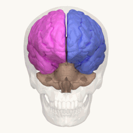

eye, hand, and foot dominance e.e
__________
first a new drawing, nothing spectacular or novel but he seems like a real nice fella


been really fascinated with the dominance of one hand/eye/foot/ear and the combination of all these parts together, specifically the psychological differences, if there are any. does being right-eye dominant make you more analytical because the left brain is more involved in the processing of visual information? similarly, would being left eye dominant lead to being more creative because visual information is obtained by the right hemisphere via the left eye?
i got more curious about all this when realizing i prefer to keep my phone in my left pocket despite being right-handed. i came to the conclusion that i do this because my left eye is dominant and therefore better able to process what i'm reading or seeing when i pull my phone out of my pocket just enough to see if i've gotten any notifications. then i got to wondering how my peers pocket their phones, and which hand they favored, and if when they clasp their hands they put their left thumb over their right or their right thumb over the left. and gosh, what causes the difference in hand clasping, and what does it mean?
there hasn't been any significant research findings that suggest that the way one clasps their hands has any relation to their personality, though it was once believed that left-over-right claspers were more emotional and intuitive while right-over-left claspers were more logical and analytical. but this is likely just another case of looking for meaning in arbitrary things(such as astrology, religion, fate, etc.)
i really want to learn more about handedness and its evolutionary history. humans aren't the only animals with a limb preference. the vast majority of animals do in fact have a limb preference from frogs to birds to cats. is it an evolutionary disadvantage to be whatever is the least common preference within a species? does living in a society designed for righties impact lefties? am i overthinking this?
even if there isn't a quantifiable or objective difference in the personality of a left-handed person vs a right-handed person, there is a difference in the way their brain is organized. in the brain, certain cognitive functions (such as language, attention, memory, visual processing) are typically localized to one hemisphere: the left or the right. language, for example, is largely localized to the left hemisphere. however, it is more common in lefties to see a more balanced distribution of function across the hemispheres meaning language processing may be spread across both hemispheres of the brain rather than localized to a single side.
now it is not a rigid rule that all lefties are less lateralized that righties or that all rigthies are bilateral or that either preference has any link to a difference in motor output. however the incredibleness of the variability in functional organization and sensory perception and motor execution between individuals is so mind-boggling. i wish so badly i could hop into the mind of another person and experience the world through their brain and compare it to my own experience.
the social perception of left-handedness varies between cultures and across time. in the western world, left-handedness was not accepted until the late 20th century. in many asian countries, children are still forced to be righties. incas believed lefties possessed special abilities like magic or healing. the left hand represents wisdom in tantra buddhism. in medieval times, left-handedness was the sign of a witch. now we are godless and too busy to look for meaning in ordinary things and being left-handed is no more than a minority preference but what does it mean?????
well i've got nothing else to say now except check out the monkey news section of this website if you want ok bye
